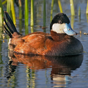

Snow Geese: At winter's end, snow geese fly north to their breeding grounds on the Arctic tundra. Pairs mate for life, and produce two to six eggs each year in a shallow ground nest. Chicks can swim and eat on their own within 24 hours, but families remain together through the young's first winter. Families can be identified as groups during both the southern and northern migrations.
Greater white-fronted goose: The greater white-fronted goose lives in North America, this gray goose is found mainly west of the Mississippi River. Nesting on Arctic tundra, it winters in open country in mild climates. Wintering flocks leave night roosts before sunrise to fly to feeding areas, and musical gabbling and honking can be heard from wavering lines of White-fronts passing overhead at dawn. Included in this species is a large, dark form known as the "Tule Goose," nesting in southern Alaska and wintering in central California marshes.

The ruddy duck: The ruddy duck is an odd little diver, the main North American representative of the group of stiff-tailed ducks, with spiky tail feathers that are often cocked up in the air. Usually lethargic, and seems reluctant to fly. On takeoff it must patter across the surface of the water to become airborne, then whirs along on rapidly beating wings. On land it is almost helpless. Flocks of Ruddies wintering on lakes seldom mix freely with other ducks, although they may associate with American Coots.
Gadwall: Look for the gadwall on small bodies of water with plenty of aquatic vegetation; Gadwall often feed in slightly deeper water than other dabbling ducks. They associate with many other duck species, and on a quick scan you may miss the males because of their subdued brown appearance—keep an eye out for their black rear ends, white wing-patch (formed by the inner secondary feathers), and intricately patterned, not streaked or spotted, plumage.
Ruffed Grouse: Ruffed Grouse can digest bitter, often toxic plants that many birds can’t handle. Levels of defensive plant compounds in buds of quaking aspen, a major winter-time food source for Ruffed Grouse, reflect the cyclic rise and fall of grouse populations: they’re lowest when grouse densities are increasing, and highest when grouse densities decline.

Horned Grebe: The horned Grebe is a small diver found mostly on northern marshes in summer, coastal bays in winter. Also widespread in Eurasia, where it is called Slavonian Grebe. Similar to Eared Grebe, but much less gregarious, it seldom nests in colonies and seldom gathers in large flocks at other seasons. Like other grebes, it must patter across surface of water to become airborne; may become trapped when waters freeze quickly overnight.
The Mourning Dove: The Mourning Dove prefers open areas, including rural and residential areas, avoiding thick forests; normally feeds on the ground. Breeding: nest is a loose platform of twigs placed at various heights above the ground, flimsy enough that the eggs are frequently visible from below. Migration: highly migratory, with birds breeding at the northern limit of the range believed to winter in Mexico, but those breeding farther south moving less, with birds present all year in the southern half of the United States. Vagrant: casual to Alaska and northern Canada; once in Great Britain.
Cuckoo: Uncommon and elusive, the black-billed cuckoo skulks around densely wooded eastern forests and thickets. Its staccato can be heard day and night, but getting a look at its slender brown body and namesake black bill may take a bit of patience. If it pops into view, notice its red eye ring and small white tips on the underside of its tail feathers. On the breeding grounds, this ardent caterpillar-eater makes quick work of tent caterpillars and webworms.
Common Nighthawks: Common Nighthawks are easiest to see in flight at dawn and dusk as they forage for aerial insects. Pick a high overlook with a good view of a river, if possible. In towns, look for nighthawks over brightly lit areas such as billboards, stadium lights, and streetlights. Scan the darkening sky and you’ll likely find some bats zipping around with their frenzied flapping—but look for a larger, bounding, long-winged shape. If you don’t see one, listen for low, buzzy peent calls. If you are in an area with breeding nighthawks, pay attention for the bizarre booming noise of a territorial or courtship flight.
Hummingbird: Hundreds of kinds of hummingbirds nest in the American tropics, and more than a dozen in the western U.S., but east of the Great Plains there is only the Ruby-throat. There it is fairly common in summer in open woods and gardens. Hovering in front of a flower to sip nectar, it beats its wings more than 50 times per second. Impressive migrants despite their small size, some Ruby-throats may travel from Canada to Costa Rica.
Virginia Rail: The virginia rail is seldom seen but often heard, this medium-sized rail lives in marshes across much of our continent. This bird and the Sora are often found together, but their diets differ: the short-billed Sora eats many more seeds, while the long-billed Virginia Rail eats mostly insects. Virginia Rails communicate with a wide variety of calls, and some of these can be mystifying to listeners; one, dubbed the "kicker call," was attributed to the elusive Yellow Rail for many years.
Painted BuntingThe painted bunting which is sometimes called the "Nonpareil," meaning "unrivalled," a fair way to describe the unbelievable colors of the male Painted Bunting. This species is locally common in the Southeast, around brushy areas and woodland edges. It is often secretive, staying low in dense cover. However, males sing their bright warbling songs from higher in the trees, partly hidden among foliage or sometimes out in the sun on an exposed perch. Some lucky Floridians have Painted Buntings coming to their bird feeders in winter.
Ovenbird: The ovenbird's rapid-fire teacher-teacher-teacher song rings out in summer hardwood forests from the Mid-Atlantic states to northeastern British Columbia. It’s so loud that it may come as a surprise to find this inconspicuous warbler strutting like a tiny chicken across the dim forest floor. Its olive-brown back and spotted breast are excellent disguise as it gleans invertebrates from the leaf litter. Its nest, a leaf-covered dome resembling an old-fashioned outdoor oven, gives the Ovenbird its name.

Blackpoll Warbler: The blackpoll warbler is among the most numerous warblers in far northern forests in summer, and perhaps the most impressive migrant of all our small birds. Every fall, most Blackpoll Warblers make an over-water migration from our northeastern coast to northern South America; some may pause in Bermuda or the Antilles, but others apparently fly nonstop for more than 72 hours. In spring they are more leisurely, traveling via the West Indies and Florida, pausing to sing in our shade trees on their way north.
Smudge-Gray Chimney Swift: A bird best identified by silhouette, the smudge-gray chimney swift nimbly maneuvers over rooftops, fields, and rivers to catch insects. Its tiny body, curving wings, and stiff, shallow wingbeats give it a flight style as distinctive as its fluid, chattering call. This enigmatic little bird spends almost its entire life airborne. When it lands, it can’t perch—it clings to vertical walls inside chimneys or in hollow trees or caves. This species has suffered sharp declines as chimneys fall into disuse across the continent.
Yellow Rail: One of the most secretive birds in North America, almost never seen under normal conditions, although its metallic clicking calls may echo across the northern prairie marshes on summer nights. Rarely flies in the daytime except under extreme pressure. Somewhat erratic in occurrence on the breeding grounds: may be common at a given locale in wet years, scarce or absent in dry years.